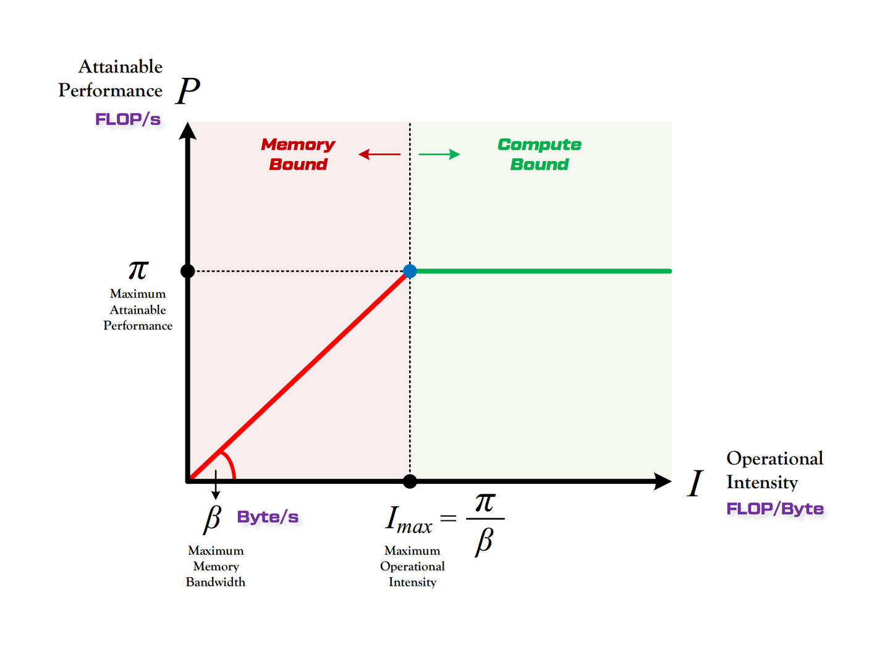
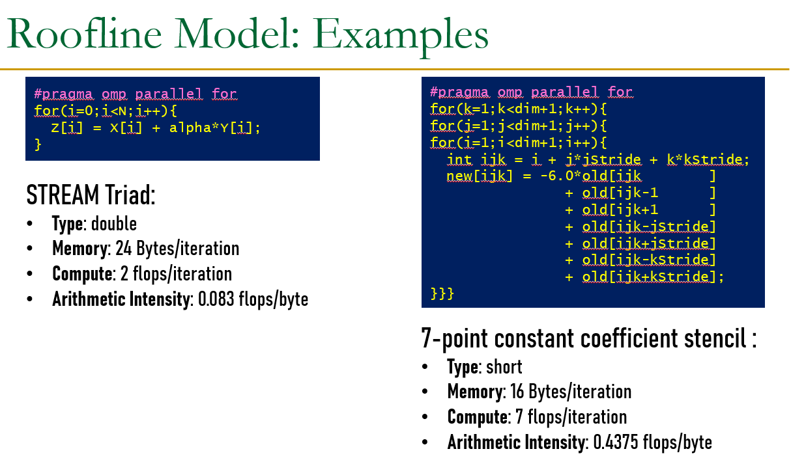
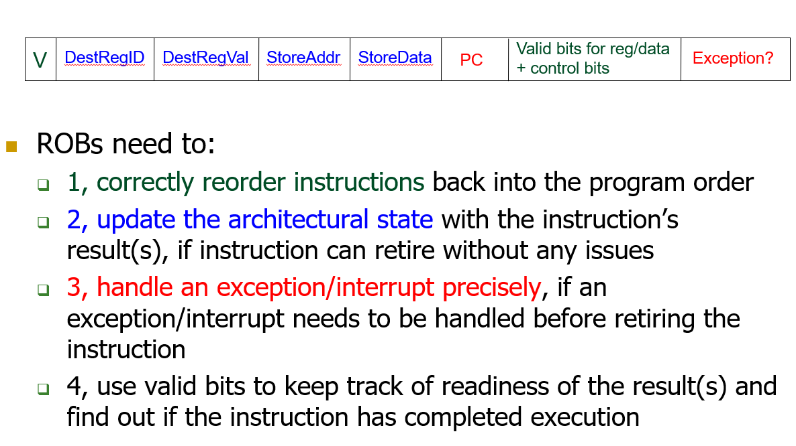
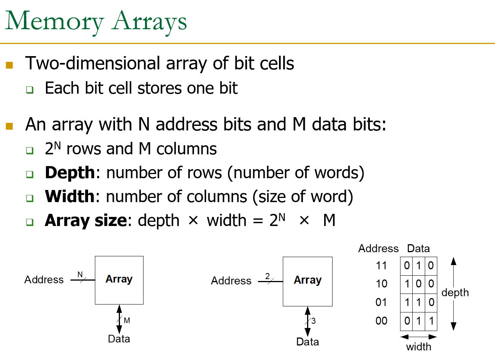
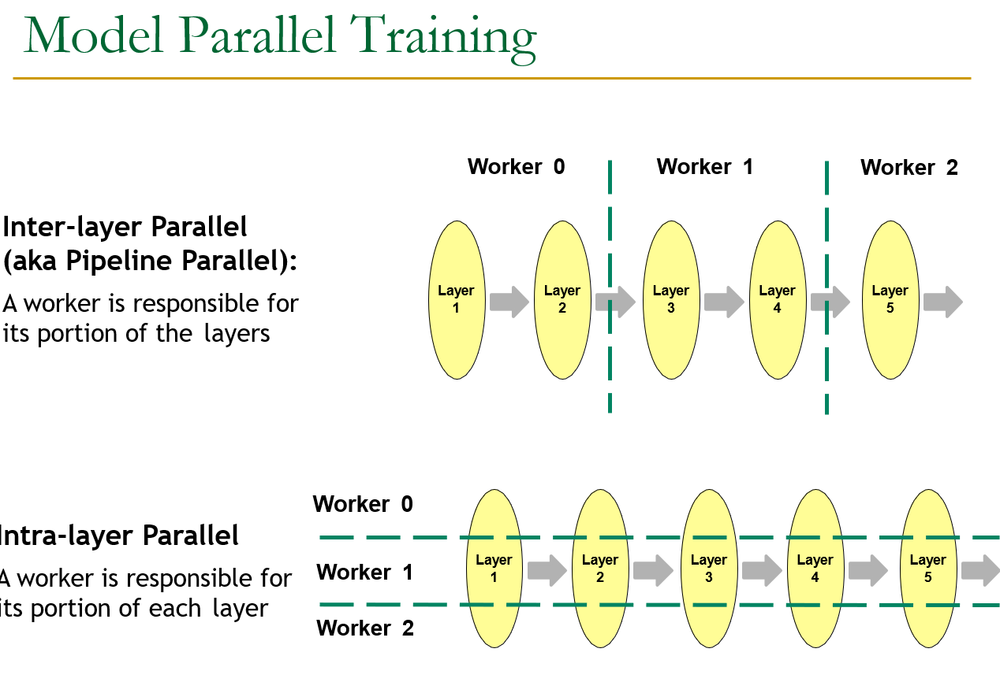
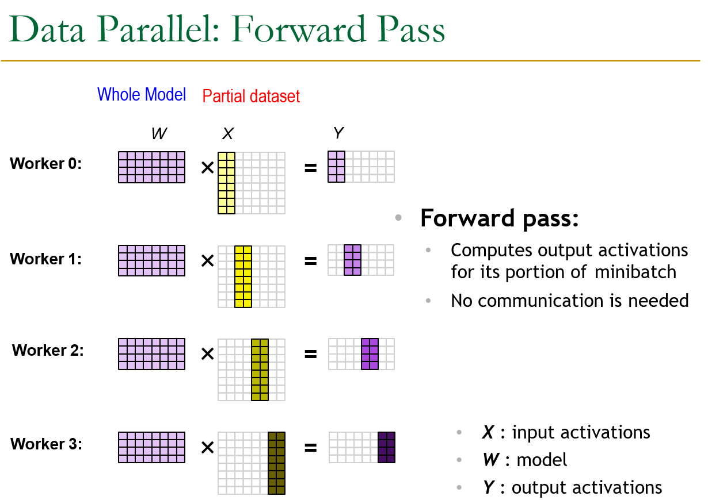

Did I ever make it through?
人工智能芯片与系统¶
约 1997 个字 6 张图片 预计阅读时间 6 分钟
任课教师：王则可
Overview¶
Amdahl's Law¶
- \(f\) 是程序中可并行化的比例，\(n\) 是处理器数量。
Roofline Model¶
模型（或程序）的实际表现受制于硬件固有的计算能力上限（Roofline 中由性能上限与带宽上限计算得出）
- 性能上限（峰值算力）：\(\pi\)，指一个计算硬件单位时间内（每秒）能够执行的最大浮点运算次数（FLOPS）（单位为 FLOP/秒）。
- 带宽上限（内存带宽）：\(\beta\)，指一个计算硬件单位时间内（每秒）能够进行的内存交换量（单位为 Bytes/秒）。
计算能力（AI，Arithmetic Intensity）：\(AI = \frac{\pi}{\beta}\)，指在这个计算硬件上，每字节内存交换最多能用来做多少次浮点运算。
- Large AI: Computation bound，计算受限于算力。
- Small AI: Memory bound，计算受限于内存带宽。

图像中，横轴为计算能力（AI），纵轴为吞吐量（Throughput），红色区域吞吐量由带宽上限决定（也就是斜率），绿色区域吞吐量由性能上限决定，此时 \(Throughput = \pi\)；两个区域交点的横坐标就是最大计算能力：\(\max AI = \frac{\pi}{\beta}\)。
Roofline example

Little's Law¶
冯诺依曼模型¶
- Stored Program
- 指令存储在线性内存序列中
- 数据和指令在内存中是 Unified 的
- 即，由控制信号决定读到的 value 是指令还是数据
- Sequential instruction processing
- 同一时间只有一条指令在执行
- Program Counter（PC）指向当前的指令
- 除了控制转移（Control Transfer）指令外，PC 每次 Sequentially 地向前更新
CPU Design¶
定义一个计算机的 Architectural State（架构状态）（程序员可见），下面是 CPU 的设计逻辑：
- 单周期（每个指令消耗一个时钟周期）
- AS -> Process inst in 1 cycle -> AS'
- 多周期
- 减短时钟周期
- 每条指令消耗多个时钟周期，多次更改 AS
- AS -> AS + MS1 -> AS + MS2 -> ... -> AS'
- 但从 ISA 的角度，AS 仍然是从 AS -> AS'，中间的 MS1, MS2, ... 是不可见的
- ISA 由指令和 AS 直接决定 AS'
- 流水线 CPU（For higher throughput）
- 我想我兄弟计算机系统了
- Instructions consecutive in program order are processed in consecutive stages
流水线 CPU 会遇到数据依赖问题
- Flow Dependence（RAW，True data dependence）
- 硬件 Stall
- 插入 nop 等到寄存器中值可用时继续流动
- 软件 Stall（Static Scheduling）
- 由编译器编排指令，硬件按这个顺序执行指令
- 区别于动态调度（Dynamic Scheduling），在动态调度中硬件可以不按编译器指定的顺序执行指令
- 在运行时决定的信息（Variable-length operation latency, memory addr, branch direction），编译器不知道，导致静态调度的实现困难
- 通过 Profiling 解决
- 由编译器编排指令，硬件按这个顺序执行指令
- Forwarding（有时候无法 Forwarding）
// Forwarding logic for ForwardAE (pseudo code): if ((rsE != 0) AND (rsE == WriteRegM) AND RegWriteM) then ForwardAE = 10 # forward from Memory stage else if ((rsE != 0) AND (rsE == WriteRegW) AND RegWriteW) then ForwardAE = 01 # forward from Writeback stage else ForwardAE = 00 # no forwarding
- 硬件 Stall
- Output Dependence（WAW）
- Anti Dependence（WAR）
后两种依赖可以通过寄存器重命名（Register Renaming）来解决，亦即接下来介绍的 ROB（Reorder Buffer）。
Reorder Buffer¶
- 不同的指令需要不一定相同的时钟周期数进行执行
- Ans：设置不同的 Function Unit（FU），每种 FU 以不同的时钟周期数执行不同的指令
- 如何处理 Exceptions/Interrupts
- Exceptions：内部原因导致
- Interrupts：外部原因导致
总的来说分为以下三步：
- In-Order Decode：指令解码后在 ROB 中记录下顺序的 Entry
- Out-of-Order Execution：指令在 FU 中可乱序执行，ROB 中的 Entry 记录下执行结果
- In-Order Commit：ROB 中最早的指令完成且没有异常时，才将结果写回寄存器堆
ROB Entry

每次访问寄存器堆时，如果其不可用，就记录下当前需要的寄存器值在 ROB 中的位置。
ROB 可彻底解决 WAW 和 WAR
Performance Analysis¶
- CPI：Cycles Per Instruction，每条指令平均消耗的时钟周期数。
- 每条指令的执行时间：CPI * Clock Cycle Time
- 整个程序的执行时间：CPI * AVG Clock Cycle Time * Instruction Count
单周期 CPU 的 CPI = 1，时钟周期很长；多周期 CPU 的 CPI > 1，时钟周期较短；
并行¶
Tomasulo's Algorithm(Inter-instruction parallelism)¶
面对 RAW 时，即便利用 ROB 乱序执行顺序写入的特性，有些情况下也需要 Stall；Tomasulo 算法引入 Out-of-Order Dispatch（Dispatch：将一条指令发送到 FU）
Independent inst 被与 Dependent inst 分开执行
引入 Reservation Station（RS）来解决这个问题，每个 FU 对应一个 RS，RS 记录下指令的操作数，在 FU 可用且操作数可用时，指令就可以被发送到 FU 执行。
Superscalar(Inter-instruction parallelism)¶
Superscalar：在一个时钟周期 Fetch、Decode、Execute、Retire 多条指令（N-wide superscalar = N instructions per cycle）
- Pros：Higher IPC
- Cons：More hardware; 检测 Dependence 更复杂
SIMD(Intra-instruction parallelism)¶
- SISD：Single Instruction operates on Single Data elem
- SIMD：Single Instruction operates on Multiple Data elems
- Array/Vector Processor
- MISD：Multiple Instruction operates on Single Data elem
- Systolic Array
- MIMD：Multiple Instruction operates on Multiple Data elems
- Multi-core Processor
- Multithreaded Processor
Warp-based SIMD vs. Traditional SIMD
- Traditional SIMD:
- 只包含一个线程
- 指令线性执行
- Programming Model：SIMD
- ISA 含有 SIMD 指令
- Warp-based SIMD:
- 包括多个 scalar 线程，以 SIMD 方式执行
- 每个线程可被单独处理
- ISA 指令是 Scalar 的：SIMD 指令被动态构造
- SPMD Model based on SIMD Hardware
Memory¶
SRAM¶
Relatively fast, only one data word at a time; expensive
Memory Arrays¶
如何高效地利用 Memory 存储大量数据

即每行存储一个长度为 M 比特的数据字（Data Word）
DRAM¶
DRAM访问的三种状态
| 状态 | 含义 | 延迟 |
|---|---|---|
| Page Hit | 访问已打开的行 | 最小 |
| Page Closed | 访问关闭的bank中的行 | 中等（需ACTIVATE） |
| Page Miss | 访问的行不是bank中当前打开的行 | 最大（需PRECHARGE + ACTIVATE） |
64位数据进入一个Rank，一个 Rank 包含八个 Chip（每 8 位数据进入一个 Chip），每个 Chip 包含八个 Bank（八位数据进入每个 Bank）
DRAM Refresh
DRAM 电容随时间会漏电，Memory Controller 需要定期刷新每一行来充电（Activate each row every N ms），否则数据会丢失。
- Refresh 的缺点：
- Refresh 期间无法访问 DRAM 的 rank/bank
- Refresh 耗能
- Long pause time in DRAM refresh
SSD¶
Hard-Disk¶
Cache¶
本段内容由 AI 生成
两种局部性
- 时间局部性 (Temporal Locality): 刚访问的数据很可能再次被访问
- 空间局部性 (Spatial Locality): 刚访问数据附近的数据很可能被访问
Cache 基本概念¶
Cache Block（缓存行/块）: Cache中存储的基本单元
关键设计决策: 1. Placement: 块放在哪里？（映射方式） 2. Replacement: 替换哪个块？（替换策略） 3. Granularity: 块多大？ 4. Write Policy: 写操作怎么处理？ 5. Instructions/Data: 指令和数据是否分开？
三种Cache映射方式¶
| 映射方式 | N（路数） | S（组数） | 特点 |
|---|---|---|---|
| 直接映射 (Direct-mapped) | N=1 | S=B | 每块只有1个位置，冲突多 |
| 组相联 (Set-associative) | 1<N<B | S=B/N | 每组N个位置，最常用 |
| 全相联 (Fully-associative) | N=B | S=1 | 任意位置可放，最灵活最贵 |
Cache参数:
```
C = 总容量
b = 块大小
B = C/b = 总块数
N = 相联度（每组块数）
S = B/N = 组数
```
地址划分: [tag | index | byte offset]
- index: 选择哪个组
- tag: 在组中匹配
- byte offset: 块内偏移
三种Cache Miss¶
| Miss类型 | 含义 | 解决方法 |
|---|---|---|
| Compulsory Miss | 首次访问某块，必然不命中 | 增大块大小（预取） |
| Capacity Miss | Cache容量不够 | 增大Cache |
| Conflict Miss | 多个块映射到同一位置 | 提高相联度 |
替换策略¶
- 先替换无效块
- 若全有效: Random / FIFO / LRU（最近最少使用）/ 混合策略
写策略¶
Step1：如果数据不在 Cache 中，以下两种策略选其一：
| Write-allocate | Write-no-allocate | |
|---|---|---|
| 写操作 | 先将数据块读入 Cache，再写 | 直接写内存，不分配 Cache 数据 |
Step2：如果数据在 Cache 中，以下两种策略选其一：
| Write-back | Write-through | |
|---|---|---|
| 写操作 | 只写Cache | 同时写Cache和内存 |
| 优点 | 节省带宽，可合并多次写 | 简单，一致性更好 |
| 缺点 | 需要dirty bit | 更多内存带宽，不能合并写 |
| 分配策略 | Write-allocate（默认） | Write-no-allocate（PCIe/IO） |
Cache一致性（Cache Coherence）¶
问题: 多个处理器核心各自有Cache，如何保证同一地址的数据一致？
三个组件: 1. Interconnect（互联）: Snoop（总线监听） vs Directory（目录） 2. Updating Policy（更新策略）: Invalidate（作废） vs Update（更新） 3. Cache Tags（标签协议）: MSI → MESI → MOESI
Snoop vs Directory¶
| Snoop（监听） | Directory（目录） | |
|---|---|---|
| 序列化点 | 总线（全局单点） | 每块一个（分布在各节点） |
| 通信方式 | 广播 | 点对点 |
| 扩展性 | 差（总线瓶颈） | 好 |
| 代表 | 小规模多核系统 | 大规模多核/多路系统 |
Invalidate vs Update¶
| Invalidate | Update | |
|---|---|---|
| 操作 | 使其他副本失效 | 更新所有副本 |
| 带宽 | 更少（一次失效+后续本地访问） | 更多（每次写都广播新值） |
MSI协议¶
| 状态 | 含义 | 读 | 写 |
|---|---|---|---|
| M (Modified) | 仅1个Cache有，已修改 | 本地读，无需总线 | 本地写，无需总线 |
| S (Shared) | 多个Cache有，干净的 | 本地读，无需总线 | 需总线Invalidate |
| I (Invalid) | 不在Cache中 | 需从内存/其他Cache读 | 需获取M状态 |
MESI协议（Illinois Protocol, ISCA 1984）¶
在MSI基础上增加E (Exclusive)状态:
| 状态 | 含义 |
|---|---|
| M | 仅1个Cache有，已修改，可本地读写 |
| E | 仅1个Cache有，干净，可本地读写 |
| S | 多个Cache有，干净，只能本地读 |
| I | 不在Cache中 |
MESI优于MSI的关键: - 从E→M不需要总线Invalidate（因为只有一份副本！） - 减少了不必要的总线流量
内存一致性（Memory Consistency）¶
Coherence ≠ Consistency!
Cache Coherence: 不同处理器对同一内存地址的操作排序
Memory Consistency: 不同处理器对所有内存地址的操作的全局排序
四种内存屏障（Memory Barrier / Fence）:
| 屏障类型 | 含义 |
|---|---|
| Load-Load | 屏障前的Load不能排到屏障后的Load之后 |
| Load-Store | 屏障前的Load不能排到屏障后的Store之后 |
| Store-Store | 屏障前的Store不能排到屏障后的Store之后 |
| Store-Load | 屏障前的Store不能排到屏障后的Load之后 |
一致性与屏障的关系: | 模型 | Load-Load | Load-Store | Store-Store | Store-Load | 代表CPU | |------|-----------|------------|-------------|------------|---------| | Sequential Consistency | ✓ | ✓ | ✓ | ✓ | Dual 386 | | Total Store Order (TSO) | ✓ | ✓ | ✓ | ✗ | x86/64 | | Partial Store Order (PSO) | ✓ | ✓ | ✗ | ✗ | ARM | | Relaxed/Weak | ✗ | ✗ | ✗ | ✗ | DEC Alpha |
- 越强的内存模型 → 性能越低/开销越大，但程序员生活越简单
AI Chips¶
Parallel Training¶
- Model Parallelism

- Data Parallelism
- Forward Pass: 每个 GPU 计算不同数据的 Forward Pass

- 权重更新：每个 Worker 根据从 N-1 个 Peers 那里收集到的梯度加和，并更新自己 Model Copy 的权重
- Strong Scaling（固定batch size增加Worker）: Batch Normalization需要最小batch size（如16+）
- Weak Scaling（增加Worker和batch size）: 大batch训练需调整超参数
- Forward Pass: 每个 GPU 计算不同数据的 Forward Pass